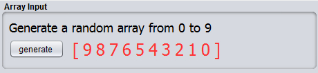
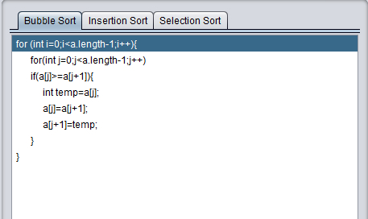
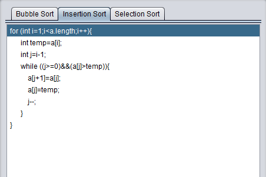
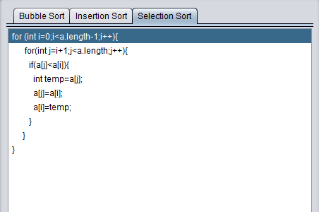
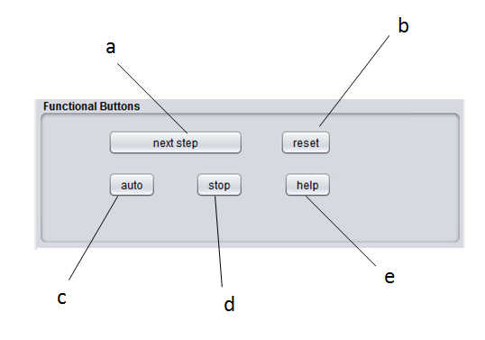
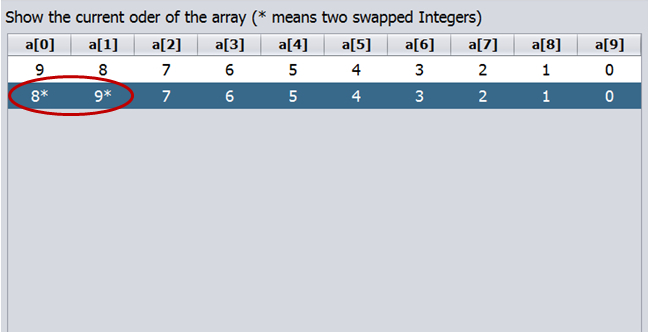
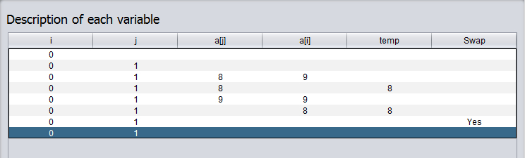

The applet consists of 5 panels which are listed below. By clicking each link, you can view each part's detailed function.
In this part, you can generate a random array from 0-9. Click on the "generate" button, a new array colored red will be generated on the right of the panel.

In this part, three different kinds of sort methods' java code are provided. You can choose the method you want by just clicking the sort name. There are 3 sort methods in total: bubble sort, insertion sort and selection sort.
  
The Functional Buttons Panel [top]
This panel contains 5 different buttons with different use. They take charge of the sort operation and result display.
b) Reset Button
c) Auto Button
d) Stop Button
e) Help Button

Each time to click the button, the related code will go on to the next line.
b) Reset Button
This button is to initialize the code state. Click the button, the related sort will go back to the first stage.
c) Auto Button
With the help of the button, you don't need to operate the applet manually. The sort will go on by itself.
Click this button, it will stop the auto function.
e) Help Button
It contains a brief introduction to the applet.
TThe Execution Result Panel [top]
In this part, you will see the current array status in the table. A new row will be generated if a swap happens. The two array elements which are swapped will be stared.

The Explanation Window Panel [top]
In this part, each row in the table records the value of variables in each line of code. Also the last column in the table shows whether there is a swap in the loop.
